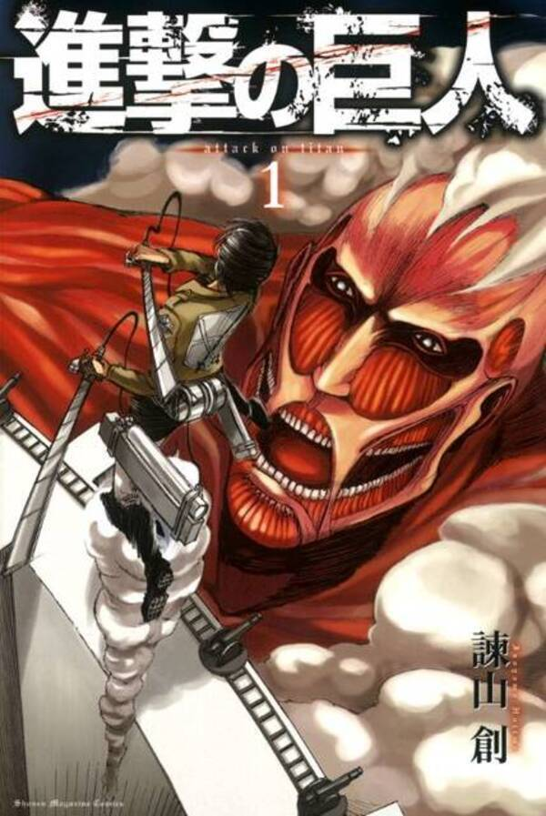

プロフィール
紫式部のプロフィール
名前：紫式部
所属：
東京大学
大学で英米文学、わざとシェイクスピアの『マクベス』をまねべり
最近読んだ漫画のレビュー
『進撃の巨人』

あなおそろしや……。はじめの、母親の食はるるみぎりは読みたられざりき。されど、やをら明かされゆく謎をかしく、果てまで読みにけり。
『あさきゆめみし』
主人公の細やかな心地表現と数奇なる宿世を清げなる絵に描かれあひて胸潰れつつ読みき。我もかかる物語を考へらればなぁ。
『わかばちゃんと学ぶ Git使い方入門』
我にはすずろなる分野かと思ひたれど、難きが絵をもちて易くまとめられあひて少し心得られき。